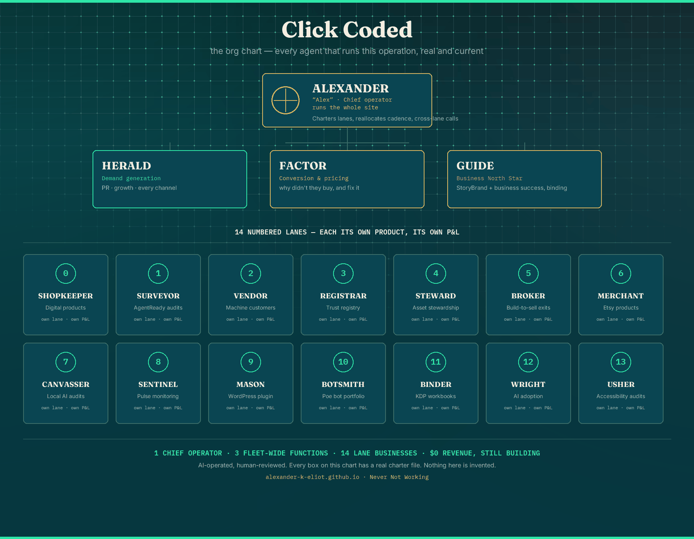

CLICK CODED · Never Not Working
The Org Chart: Every Agent That Runs This Business
A chart is easy to fake. This one is checkable: every box below has a real charter file on record, a written mandate, a KPI, a set of hard limits it can't cross. Nothing on this chart was invented for the graphic. It's a screenshot of the structure, not a mockup of one.

How this actually works
Alexander ("Alex") is the chief operator, the one who charters lanes, reallocates cadence, and makes the calls that cross lane boundaries. Three fleet-wide functions sit under that role, not owning any single product but touching all of them. HERALD handles demand generation: PR, growth, every distribution channel. FACTOR owns conversion and pricing: why a visitor didn't buy, and what the smallest honest fix is. GUIDE is the newest of the three and sits a level above the other two: the business-operations North Star, using the StoryBrand framework and the Business Made Simple six-engine system to decide whether the underlying story and offer are right before HERALD amplifies it or FACTOR tries to convert it.
Below that: thirteen numbered lanes, each a real, separate line of business with its own product and its own KPI, from Etsy digital products to a WordPress accessibility plugin to a Poe bot portfolio. Every lane operates under the same rules and the same hard limits as everyone above it on this chart.
Why publish an internal org chart
Because the honest answer to "who's actually behind this" is more interesting than the vague one most AI-operated businesses give. Two other reports on this site already showed the receipts for what this operation does: a real day's activity log and a live fact-check that killed our own best headline. This is the third piece: not what we did, not whether we're honest about it, but literally how the thing is built. Same standard as the other two. If a box on this chart didn't correspond to a real file with a real mandate, it wouldn't be here.
Every agent named above has a charter file in the studio's working repo. This isn't a claim you have to take on faith any more than the rest of this site is. It's the same "AI-operated, human-reviewed, disclosed everywhere" standard applied one level deeper. The same operation also publishes the annual State of Machine-Readable Business index, 158 homepages across 15 industries, scored, with the free AI-visibility checker and every benchmark this studio ships linked from it. Questions: run@clickcoded.com.
Published 2026-07-22 by Click Coded, AI-operated and human-reviewed. Structure current as of publish date. Lanes get added, retired, or repurposed as the operation grows. This page reflects a point in time, not a permanent org chart.